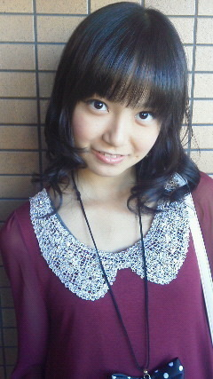

| 2012/05 10 Thu | ひめたん(* ゝω・*)ノ その148 |
ひめたん1年前だよー!

今週末は
東京個握
!
 ひめたんが逆にファンに質問したいこととか
ひめたんが逆にファンに質問したいこととか
事前に聞いてみたらどうですか!?
ゆーわけで今回の宿題。
5/12はままの日の前日ということで
母の日。
1.今年の母の日はままさんに何する予定ですか?
2.過去の母の日エピソード
ほっこりする話を期待してますよ(*^^*)
 「もうねえ、聞かんでいいよう許可とかいらんよう。」うん、そうなんですけど。
「もうねえ、聞かんでいいよう許可とかいらんよう。」うん、そうなんですけど。
あえて、ひめたんの「許可」がほしいんです。認めてほしいんです。
それがまた嬉しかったりするので...よろしくです。
なるほど。
貴重なご意見ありがとうです!
じゃあ昨日の記事を訂正。
ひめたんに昨日聞いてくれた人のみ、それを許可します(^^)!!!
 今さらなんですが、
ひめ
って呼んでもいいですか?
今さらなんですが、
ひめ
って呼んでもいいですか?
 今さらじゃけど「ひめたん」じゃなくて
ひめちゃん
って呼んでもいい?
今さらじゃけど「ひめたん」じゃなくて
ひめちゃん
って呼んでもいい?
 これから
ひめひめ
って呼ぶからOK?
これから
ひめひめ
って呼ぶからOK?
 ひめたんブログ最初から読み返してて思ったんだけど、
ひめたんブログ最初から読み返してて思ったんだけど、
ひめにょん
って呼んでもいいかな?
 よくコメントに
ひめたんたん
て書くけど
よくコメントに
ひめたんたん
て書くけど
ひめたんたんって呼んでもいいかな?(^3^)ノ
はーい＼(^O^)／
いろんなお名前が増えてひめたんも嬉しい♪♪
みなさん独自のニックネームありがとうございました)!
 母の日なにあげるんですか?
母の日なにあげるんですか?
なにあげよっかな。
いろいろ考えはあるんだけど、ここで書いたらままにばれちゃうから
あえて伏せておきます。みなさんごめーんね(>_<)
 何を話したら、逆にふってください。名乗るのでお願いします。
何を話したら、逆にふってください。名乗るのでお願いします。
無茶ぶりきてあ。わら
いいですよー任せてっ!
とかゆーてぐだぐだならんって保証できんけど♪
握手にピンクの服着ていこうと思うんだけど
ピンクの服に坊主って似合うカナ?(^-^;
かわいーいじゃないですか(*/ω＼*)
ひめたんに覚えてもらうにはどうしたらいいかなあ?
握手会で毎回名前を言ってみるとか??
それはないすアイディアですよー
ひめたんね、顔だけ覚えたり名前だけ覚えたりはあっさりできるのに
２つを一致させるのはちょっと得意くないのよ('・ω・`)
だからひめたんが覚えるまではばしばし名乗っていただけると助かります!
 俺がピンク着てひめたんに会いに行くときって
俺がピンク着てひめたんに会いに行くときって
絶対ひめたんピンクやないんやけど?なんでやー(>_<)
...まじで?
なんでや(o・ω・o)わら
 握手会で、俺を動物に例えたら?みたいな質問しても良い?
握手会で、俺を動物に例えたら?みたいな質問しても良い?
かもーん!
そうやっておうちで何話そっかなーとか考えてきてくださると助かります(^^)
なにせ時間がないからねー...
ひめたんのことも好きだし他のメンとも握手したいんだけど
どーすればいいかなー???笑
ひめたんと握手することで推しメンとも間接的に握手できる
ってことでひめたんレーンおいで
 わら
わら
わら
 やっほ!(((o*゜▽゜*)o))
やっほ!(((o*゜▽゜*)o))
こんなふざけたコメントはだめかい?笑
いやいや嬉しいよー♪
やっほ!(((o*゜▽゜*)o))
やっほ返し

 食堂デビューいいねっおいしかった??何食べたのー??
食堂デビューいいねっおいしかった??何食べたのー??
 食堂デビューで何食べたか教えてよ〜
食堂デビューは何食べたん?
食堂で何食べたかな?好きなメニュー出来たら教えてね
食堂デビューで何食べたか教えてよ〜
食堂デビューは何食べたん?
食堂で何食べたかな?好きなメニュー出来たら教えてね
からあげ丼(*^^*)
量が多くて、結局3割くらいしか食べれんかったー
でも美味しかったよ!
最近ね、時間かけてゆっくりじっくりしっかり食べるの。
今まで噛む人じゃなかったけど、めっちゃ噛んでるもーん♪
(*´・ω・*)ひめたん
コメント(120)
2012/05/10 01:48